In this blog, you will learn about Quarto, it’s features and step-by-step process to create a blog for you.
What is Quarto?
Quarto is an open source scientific and technical publishing system built-on pandoc.
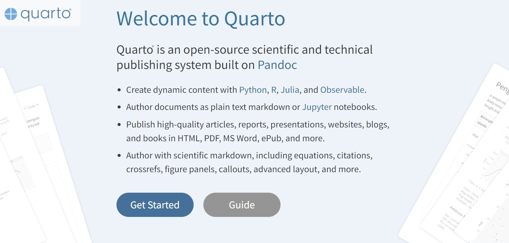
1. Initial Setups
You may follow the steps provided here, if you’re beginner or R user.
a. Install R and RStudio
First of all, please make sure you’ve installed R and RStudio. The latest version of RStudio supports Quarto docs and visual markdown editor.
| R for Windows | Download Link |
| RStudio for Windows | Download Link |
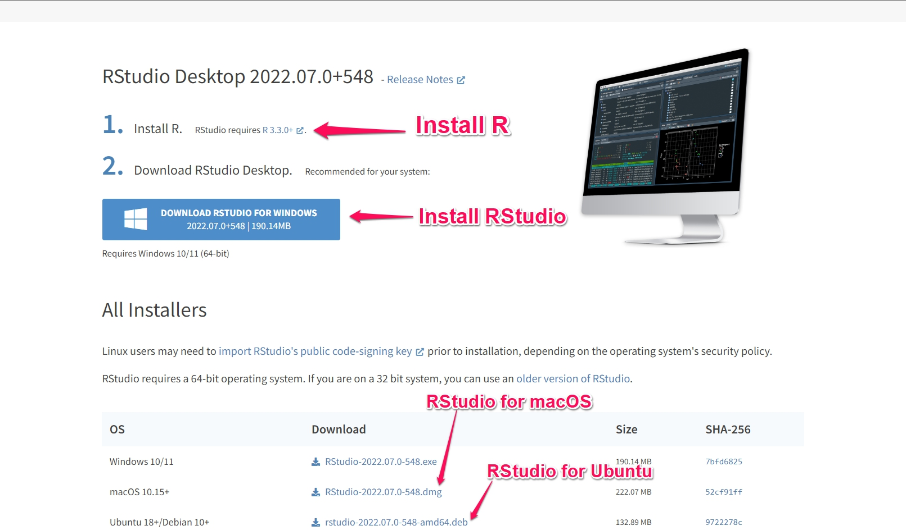
b. Install Quarto CLI from Website
For next step, you need to download and install quarto from website.
You can use Quarto CLI regardless of R and RStudio. However, if you’re a beginner or R user, we recommend you to do so.
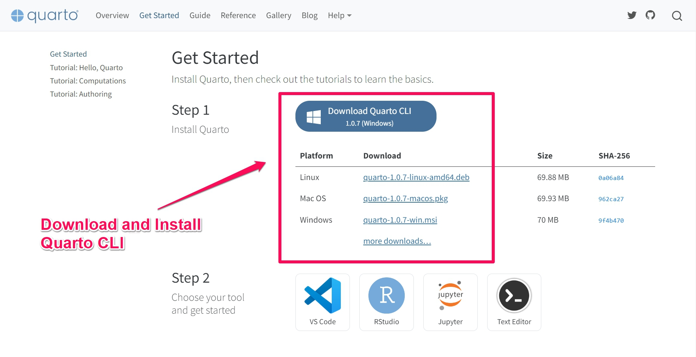
2. Create Quarto Blog with RStudio
RStudio support for quarto documents is awesome. With visual markdown editor, it was super easy to create this blog.
a. Install Quarto Package
Quarto package helps you create quarto website or blog pages in RStudio with ease.
You can install quarto package with following steps:
- First, click on Packages tab
- Then, in text box type quarto
- Click on Install button
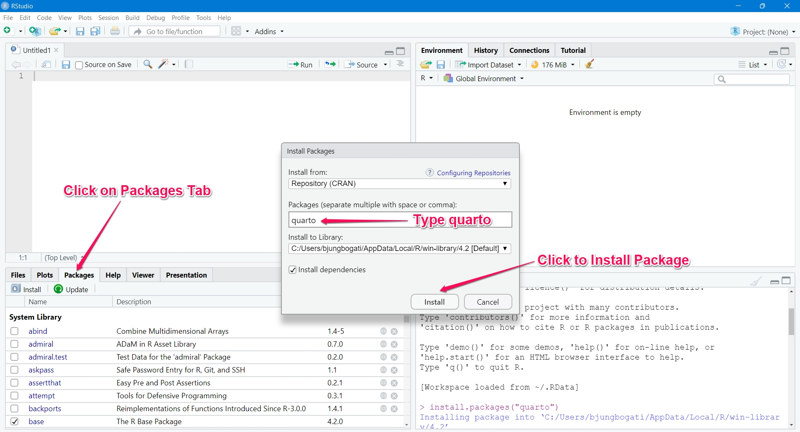
b. Create a New Project
On your right-top, click on Project and further on New Project.
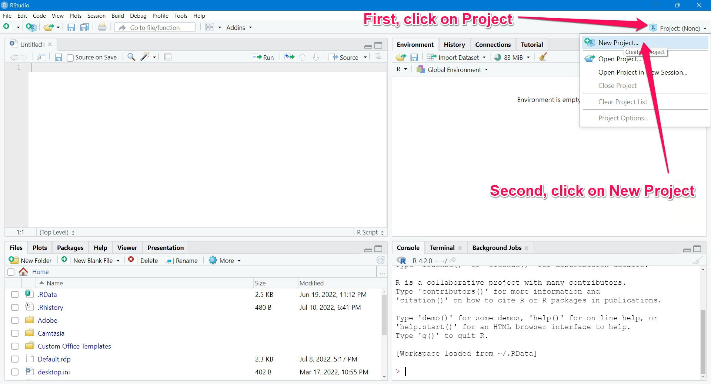
c. Create a New Directory
Now, you have three options to choose. Since, this is your new quarto project, you can choose New Directory.
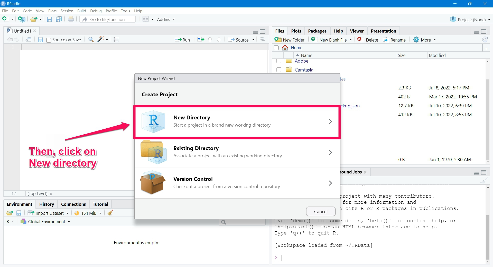
d. Select a Quarto Blog
Further, you can click on Quarto blog since you’re creating a blog.
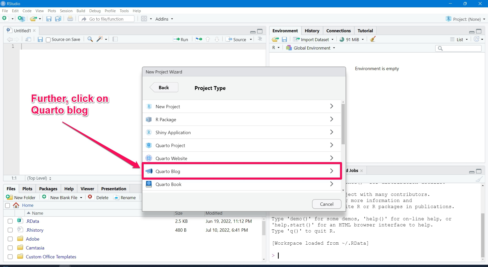
e. Create a Quarto Blog
Now, it’s time for you to create quarto blog.
- First, enter name of your blog (eg: myblog). This will create new folder with name of your blog.
- Then, select location for your blog to save in your local system. It can be your documents.
- Please, check ✓ use visual markdown editor
- And, click on create project.
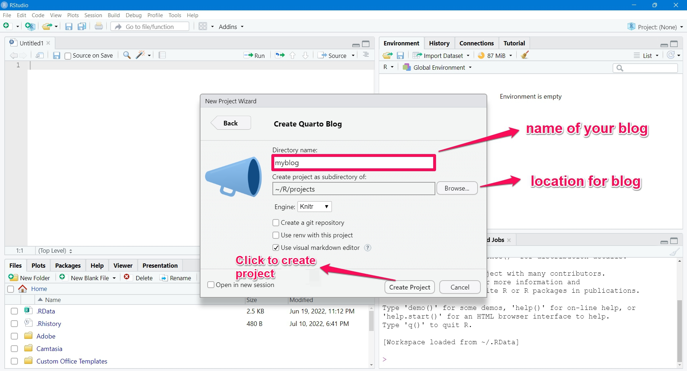
f. Quarto Blog Render
Now you can type name of your blog which will be shown in home page.
Then click on render to preview your blog.
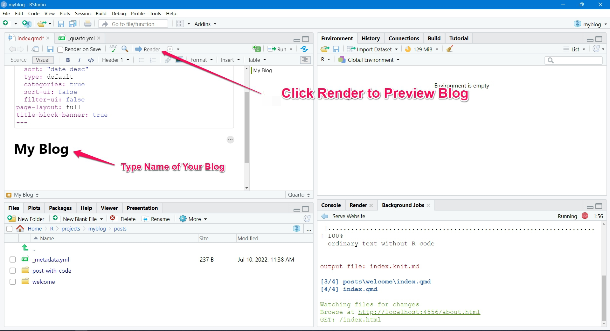
g. Preview of your blog
Once, render completes then you’ll see preview of your blog. This is how your blog looks in your local system.
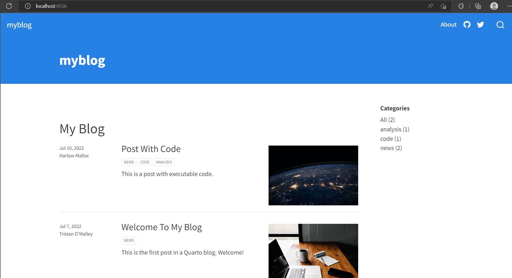
3. Host a Quarto Blog
Once you’ve set up blog in your local system, now it’s time to host it online. For, hosting there are several popular alternatives like GitHub pages, Netlify, RStudio connect etc. In this blog, we will be using Cloudflare which offers free hosting services along with few features (custom domain, email routing etc) which will be useful for you in later.
a. Sign up for Cloudflare.com
First, you need to sign up for cloudflare.com account. This will give your access to features that cloudflare provides which you’ll sure find them amazing.
If you already have an account, just login to Cloudflare dashboard.
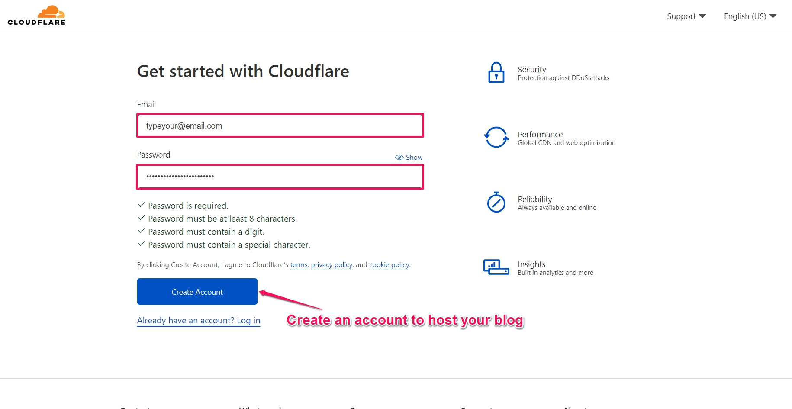
b. Create a Cloudflare Project
Once you’ve logged into dashboard then, then you have to :
First, click on Pages on you left sidebar
Second, click on create project
Third, click on direct upload
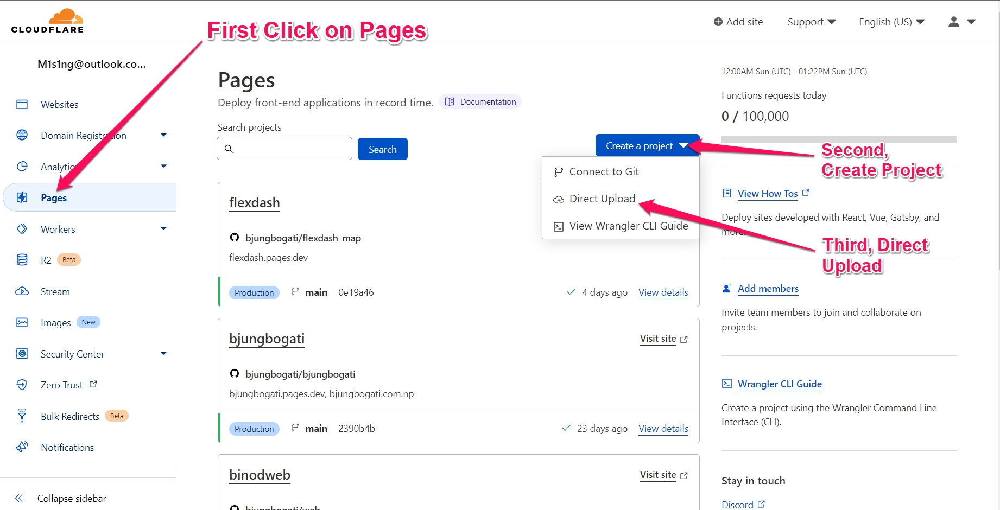
c. Name your Project
Now, choose name for your project (eg: myblog or yourname), which will be your website url.
Please, try adding different prefix/suffix, if the address you want is not available.
Example: I have used -np as suffix and your blog url will be myblog-np.pages.dev
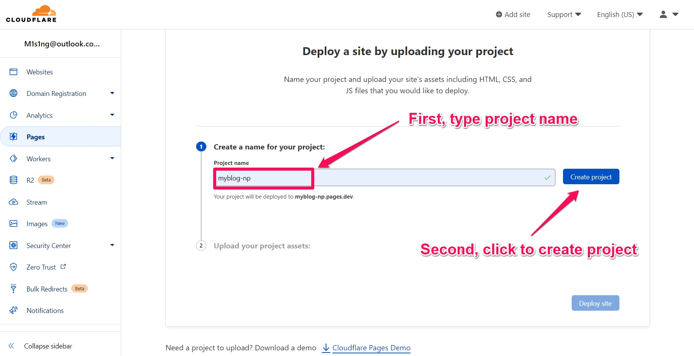
d. Direct Upload Quarto Project Folder
After choosing your project name, now it’s time for upload.
First, click on the select from computer
Second, click on upload folder
Third, navigate
_sitefolder (components of your blog)Fourth, click upload
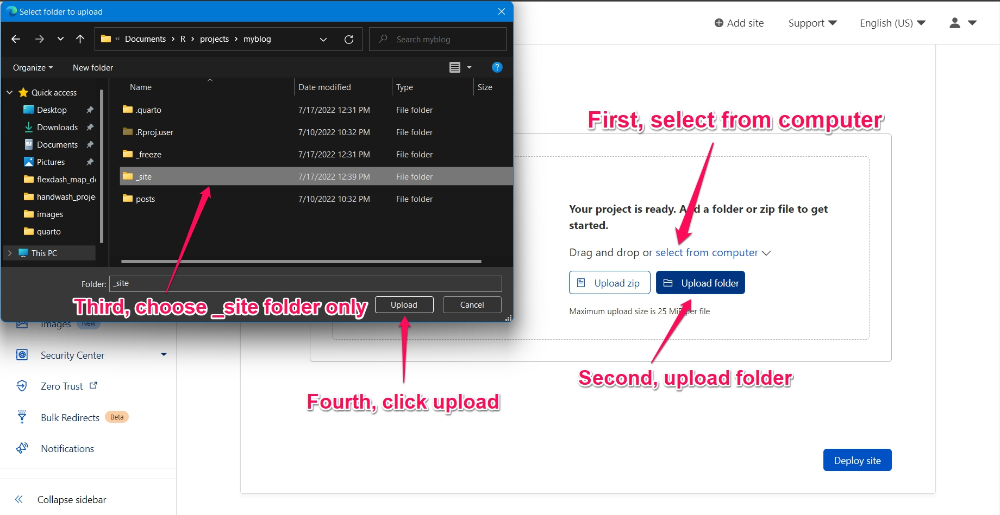
e. Deploy a Quarto Blog
Once you’ve uploaded the _site folder, now it’s time for deploy your site online.
For that, click on Deploy site.
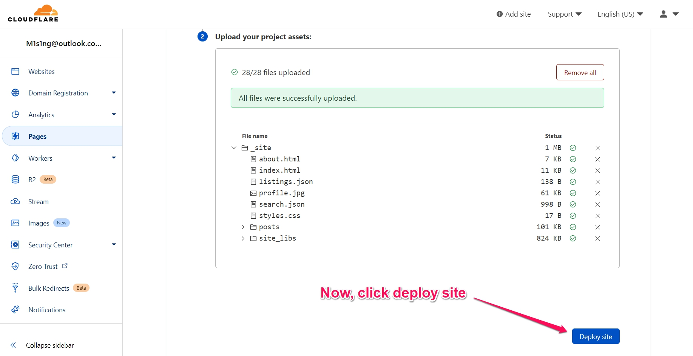
f. Deploy a Quarto Blog
Once, you see Success, please continue to the project.
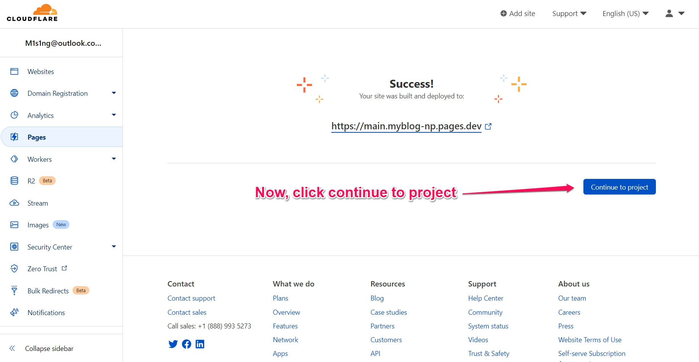
g. Setting and Dashboard
Now, your blog is live in address like myblog-np.pages.dev (projectname.pages.dev).
In custom domains tab, you may add your own domain (.com, .net, .org etc)
In settings tab, settings like Web analytics, renaming / deleting project are available.
You can click on the Domains: myblog-np.pages.dev (similar link) below to view your site.

h. View your live quarto blog
Congratulations, your blog is live on the internet.
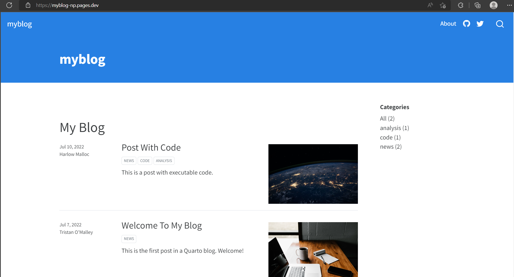